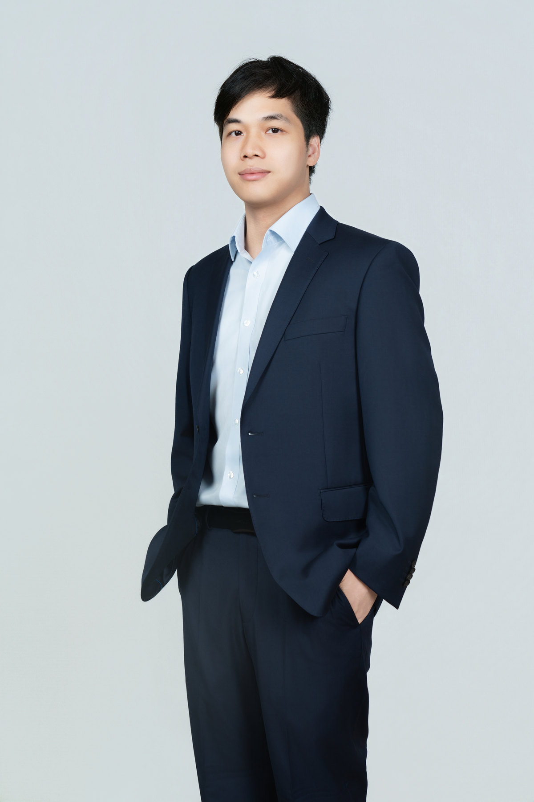

纵向科研课题
融合路段单元异质性的广西高速公路运营风险动态评估模型及防控机制研究
广西自然科学基金面上项目 · 广西壮族自治区科学技术厅 · 2026GXNSFAA00641215 · 2026.04—至今 · 经费 10 万元
主持在研
交通运输工程 · 道路交通安全 · 工程实践
Jianfeng Liu
南宁学院交通运输学院专任教师，高级工程师，同济大学工学硕士。2024 年 6 月入职南宁学院。
持有注册土木工程师（道路工程）资格、监理工程师（交通运输工程）资格及监理工程师（水利工程）注册证书；曾取得咨询工程师（投资）登记证书。另获华为 HCIA-AI 认证，入选南宁市 E 类高层次人才及广西标准化协会专家库。
担任《Journal of Transportation Engineering, Part A: Systems》等期刊审稿人。研究方向：道路交通安全、智慧交通、道路规划与勘察设计、交通环境影响评价、交通运输专业教学改革。

研究兴趣来自长期的道路工程实践，重点关注事故数据、道路条件和交通运行之间的关系。
2016 年至 2024 年在广西交通设计集团工作，参与公路、互通立交和城市道路项目的设计与前期论证。2024 年起在南宁学院任教，讲授交通安全、运输经济学、交通运输工程概论、工程测量等课程。
发表的代表性论文涉及道路事故风险域重构、桥梁运营安全评价、高速公路路段安全评价以及公路与市政道路融合设计。英语六级成绩 541 分；相关成绩单和职业资格证明见下方经遮挡的公开预览。
按时间顺序列示工作及受教育经历。
交通运输学院 · 专任教师
道路设计与项目管理 · 工程师、高级工程师
交通运输工程 · 硕士
土木工程（道路工程）· 本科
以下方向对应已有论文或工程经历，具体研究计划根据报考导师和学校要求调整。
从事故点位、道路几何和交通条件出发，研究风险的空间分布、路段差异及评价方法。
围绕安全设防分级、多指标评价和维护优先级，连接工程经验与定量分析。
关注路网功能、互通立交比选和远期市政化需求，研究设计方案与实施阶段的衔接。
在研科研课题、决策咨询及教学改革项目。
广西自然科学基金面上项目 · 广西壮族自治区科学技术厅 · 2026GXNSFAA00641215 · 2026.04—至今 · 经费 10 万元
子课题：广西承接产业转移政策支撑体系研究 · 广西壮族自治区宏观经济研究院 · GXZC2024-C3-005957-JDZB · 2025.01—2025.06 · 经费 20 万元
南宁学院 2026 年度教学质量与教学改革工程项目 · 2026-JTXY-XMHJX02
南宁学院 2025 年度校级教学改革项目 · 2025XJJGA10
论文、获奖与证书材料均可在线预览或打开 PDF。